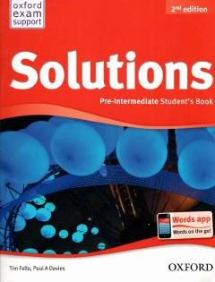

SPIngliz tilini Pre-Intermediate darajasida o'rganish uchun mo'ljallangan amaliy darslik.
Ushbu darslik ingliz tilini o'rta darajadan oldingi bosqichda (Pre-Intermediate) o'rganuvchilar uchun mo'ljallangan bo'lib, grammatika, so'z boyligi va muloqot ko'nikmalarini rivojlantirishga yordam beradi. Kitobda turli xil qiziqarli mavzular, o'qish, tinglash va gapirish mashqlari jamlangan.